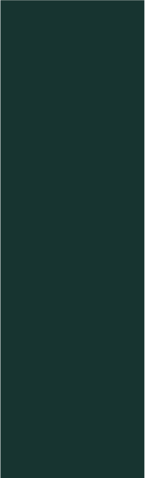
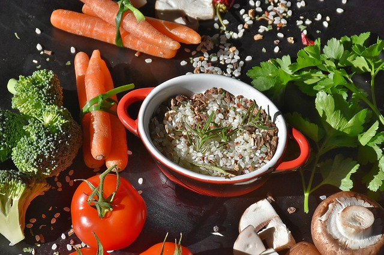

2Uforyou


쇠고기버섯볶음무른밥
*주의해야 할 재료,
없음.
재료 : 쌀 15g, 물 220g (3끼 양)
1
쌀을 깨끗이 씻어 불린 후
물을 조금 넣고 믹서에 곱게 간다.
2
간 쌀에 물을 넣고 센 불에서 저어가며 끓인다.
3
부글부글 끓어오르면 약불로 줄인 후
푹 퍼질 때까지 약 5분 끓인다.
모유 묽기가 적당하다.
TIP!
원하는 농도보다 묽게 끓인다.
아이가 먹기 알맞을 정도로 식으면 되직해진다.
4
고운 체에 거른다.